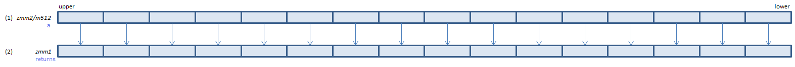

VRSQRT14PS - Reciprocal SQuare RooT 14 Packed Single
VRSQRT14PS xmm1{k1}{z}, xmm2/m128/m32bcst (V5+VL
__m128 _mm_rsqrt14_ps(__m128 a)
__m128 _mm_mask_rsqrt14_ps(__m128 s, __mmask8 k, __m128 a)
__m128 _mm_maskz_rsqrt14_ps(__mmask8 k, __m128 a)

For each float, calculate approximate reciprocal of square root of (1) and set the result to (2). (relative error < 2-14)
VRSQRT14PS ymm1{k1}{z}, ymm2/m256/m32bcst (V5+VL
__m256 _mm256_rsqrt14_ps(__m256 a)
__m256 _mm256_mask_rsqrt14_ps(__m256 s, __mmask8 k, __m256 a)
__m256 _mm256_maskz_rsqrt14_ps(__mmask8 k, __m256 a)

For each float, calculate approximate reciprocal of square root of (1) and set the result to (2). (relative error < 2-14)
VRSQRT14PS zmm1{k1}{z}, zmm2/m512/m32bcst (V5
__m512 _mm512_rsqrt14_ps(__m512 a)
__m512 _mm512_mask_rsqrt14_ps(__m512 s, __mmask16 k, __m512 a)
__m512 _mm512_maskz_rsqrt14_ps(__mmask16 k, __m512 a)

For each float, calculate approximate reciprocal of square root of (1) and set the result to (2). (relative error < 2-14)
x86/x64 SIMD Instruction List
Feedback